Nous allons maintenant voir en détail comment faire une bulle oreille (pinch-twist, ear-twist ou même bean-twist en anglais). Cette technique est utilisée dans de nombreuses figures. Vous la retrouverez notamment dans le tutoriel du sabre, de la grenouille, du tigre, du pingouin, de la fleur, de la girafe, etc.
Si cette technique est utilisée si fréquemment, ce n'est pas uniquement pour sa forme naturelle d'oreille (ou de haricot) mais aussi parce qu'elle permet de solidifier et de renforcer les parties potentiellement plus fragiles et délicates d'une sculpture en ballon.
Autant dire qu'il est primordial de maîtriser cette technique.
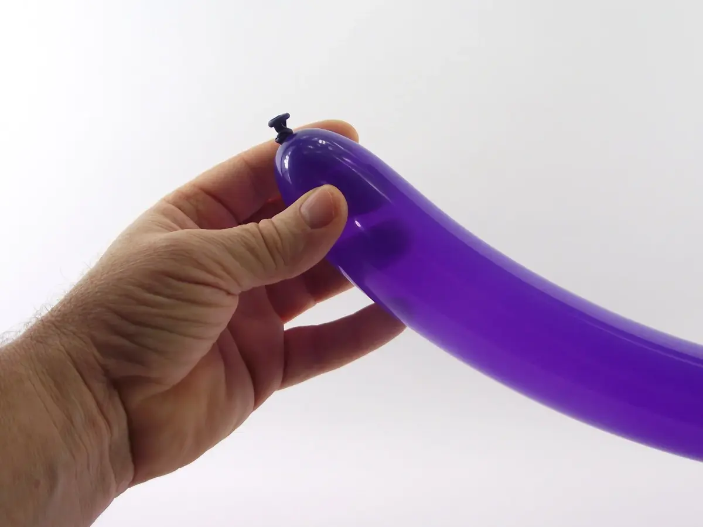1- Pour s'entraîner à faire une série de bulles-oreilles, commencer par gonfler un ballon à sculpter, environ au tiers de sa longueur.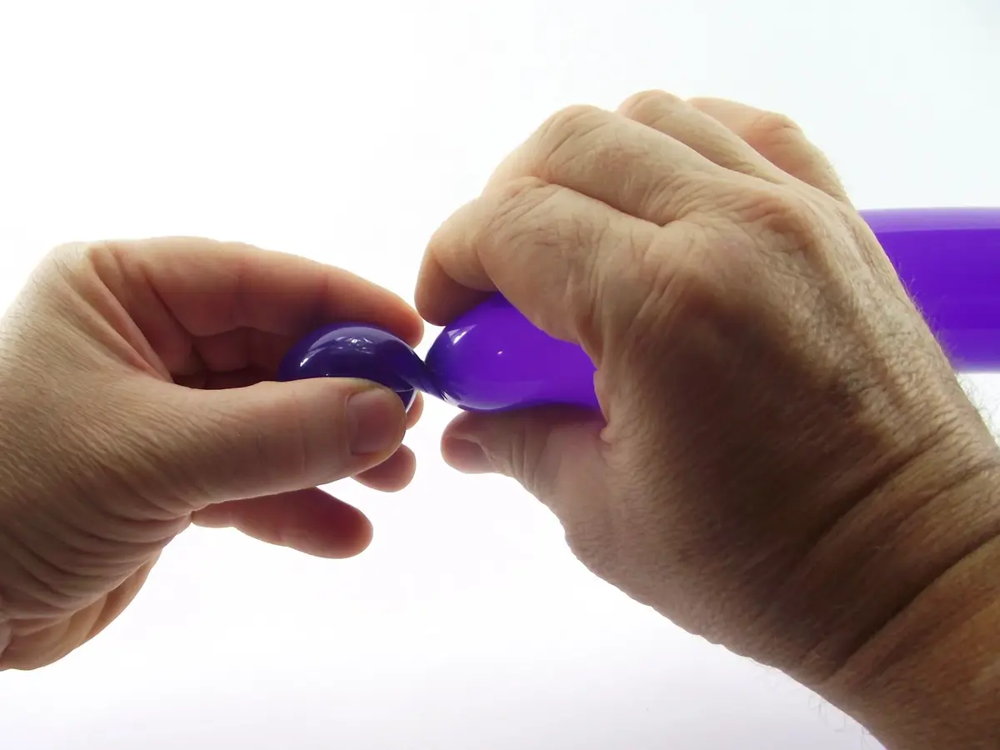2- Commencer par confectionner une première bulle...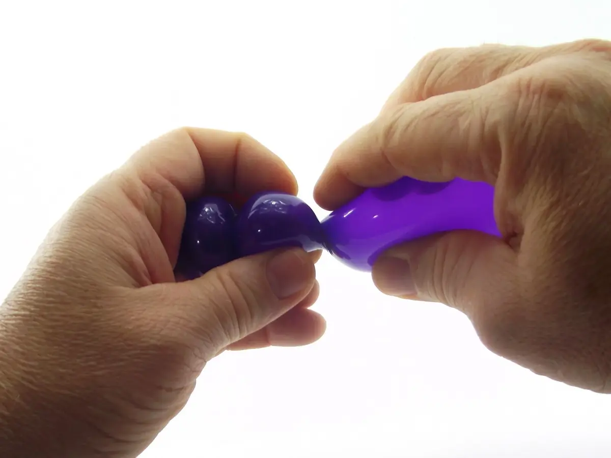3- Puis une deuxième...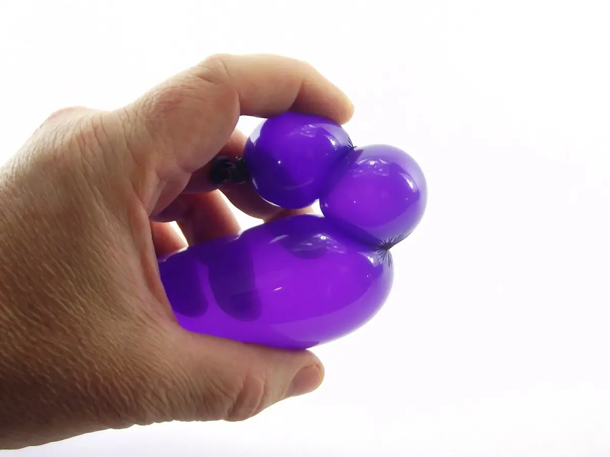4- Plier le ballon au niveau de la deuxième bulle, de manière à ce qu'elle ressorte de la main de maintien.5- Introduire l'index de la main de manipulation sous cette deuxième bulle afin de la dégager, et de la tenir plus facilement entre le pouce et le majeur.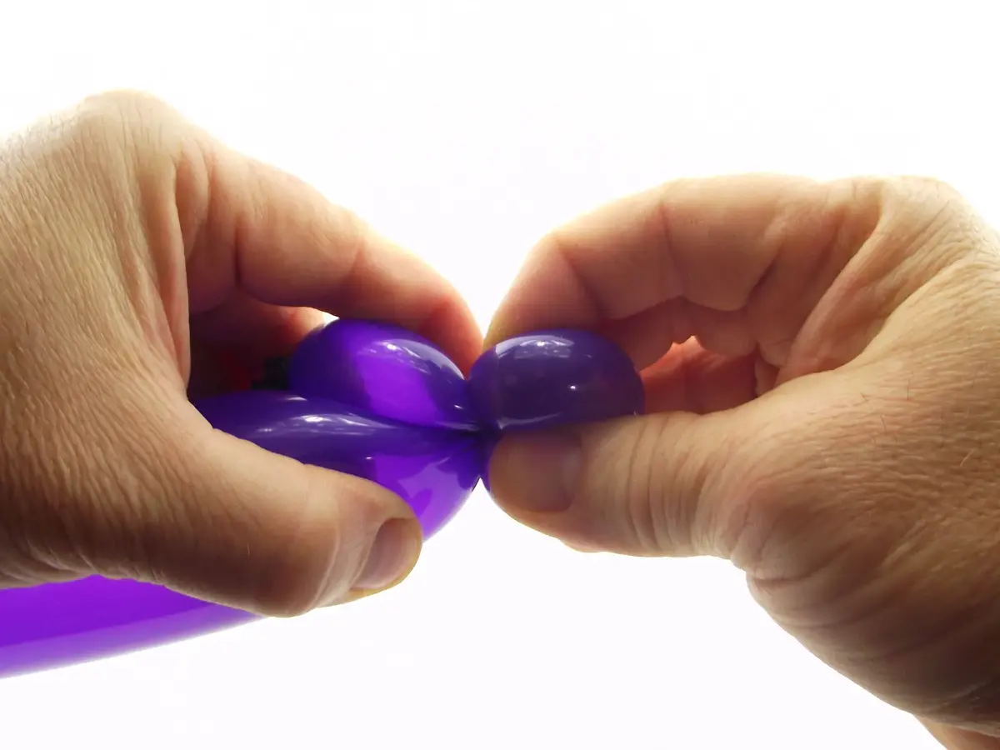6- Une fois la bulle bien en main, il faut la pincer au niveau de sa base, puis lui faire effectuer plusieurs rotations sur elle-même.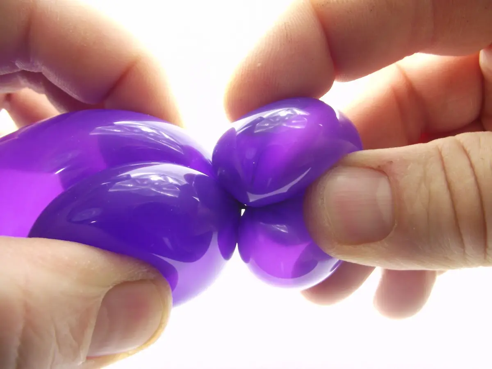7- Il faut la faire pivoter au moins 3 ou 4 fois sur elle-même, au niveau de sa base.8- On obtient ainsi une bulle qui ressemble à un haricot ou encore à une oreille.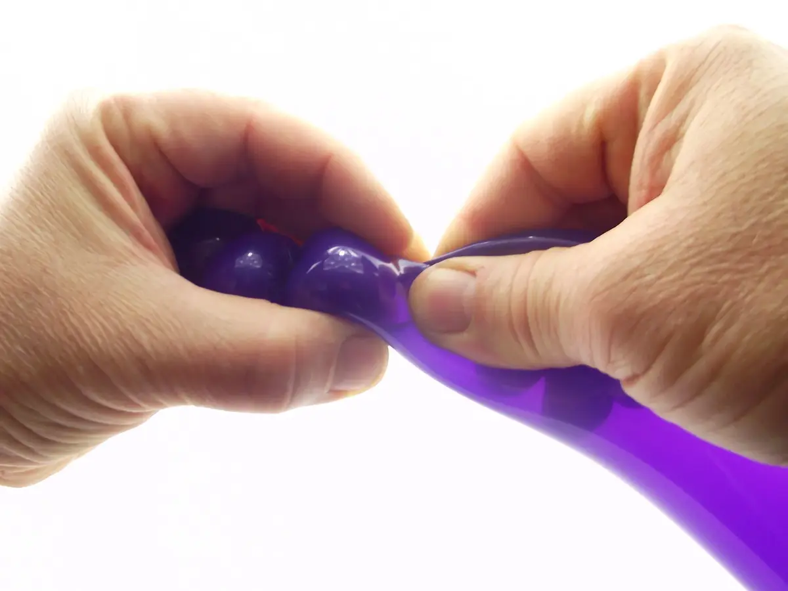9- Pour continuer à s'entraîner, confectionner deux autres bulles à suivre…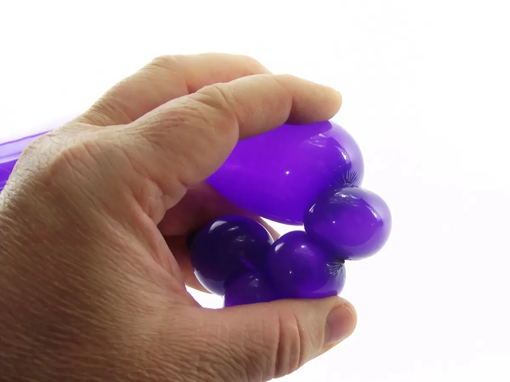10- Plier à nouveau le ballon de manière à ce que la dernière bulle forme une protubérance qui ressorte de la main de maintien.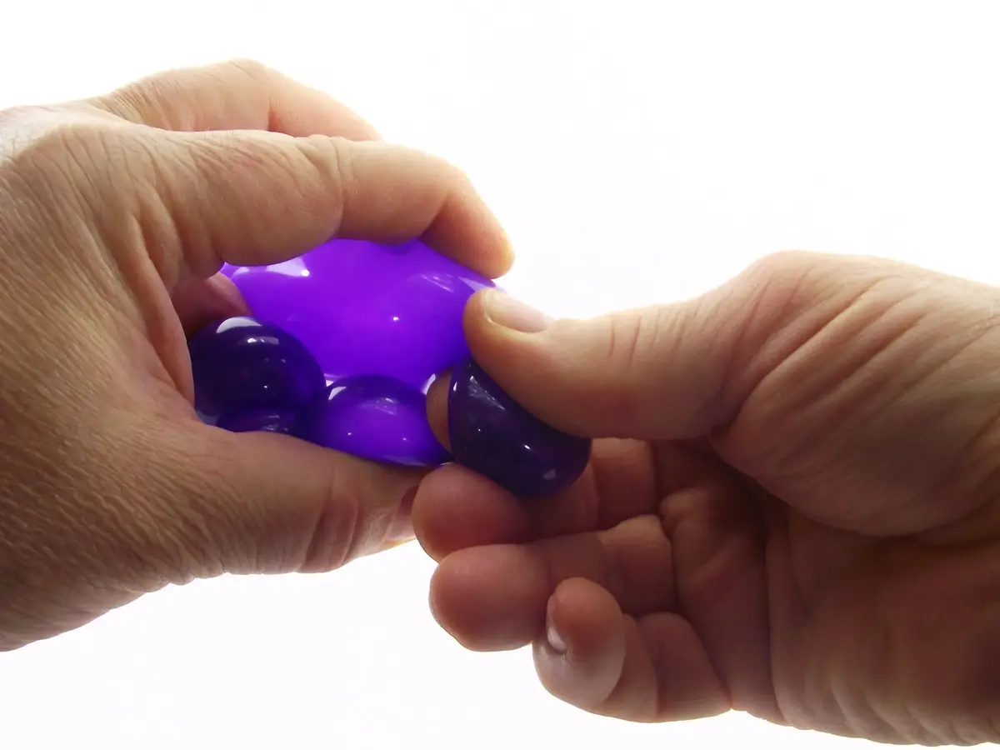11- Introduire l'index de la main de manipulation sous cette dernière bulle afin de la dégager et de la tenir plus facilement entre le pouce et le majeur.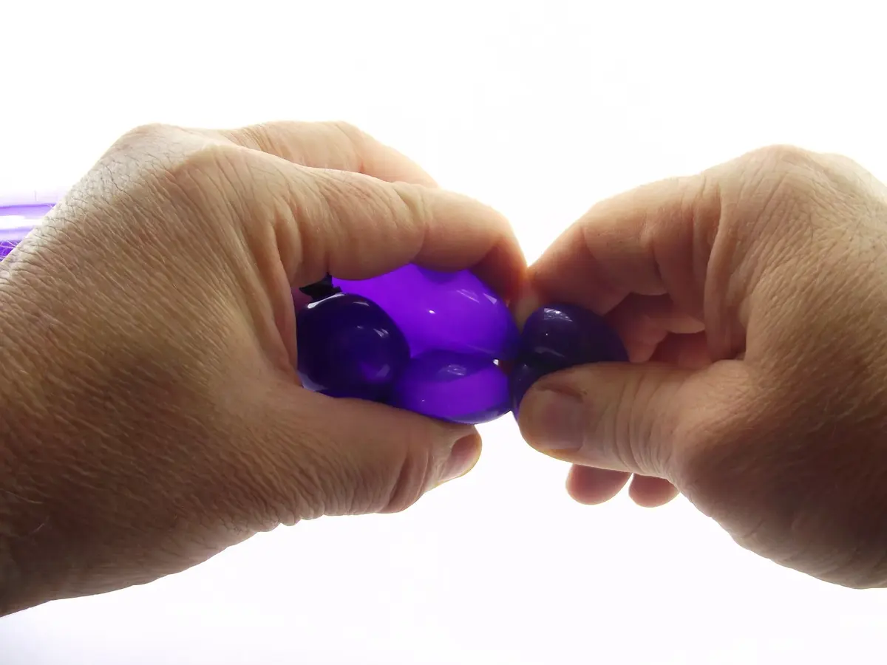12- Et une fois la bulle bien en main, pincer la bulle à sa base et lui faire effectuer plusieurs tours sur elle-même.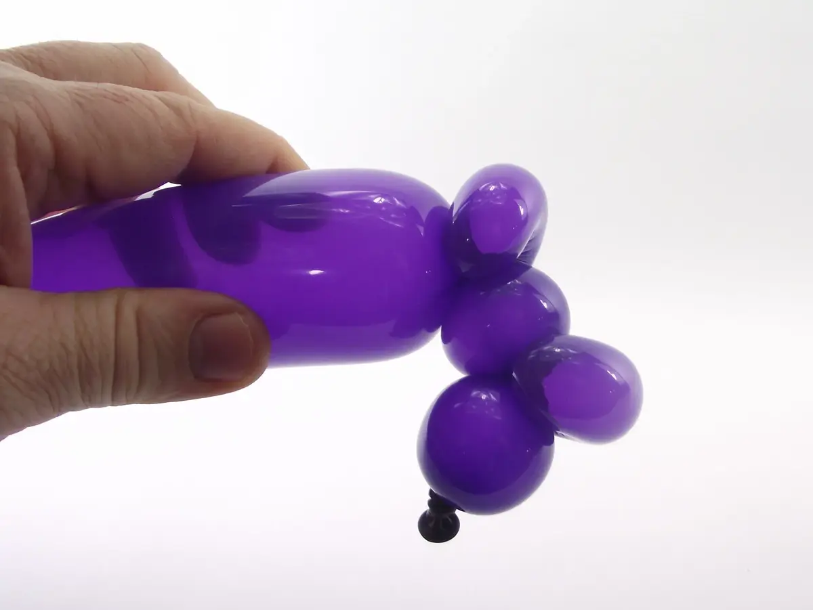13- On obtient ainsi une deuxième bulle-oreille.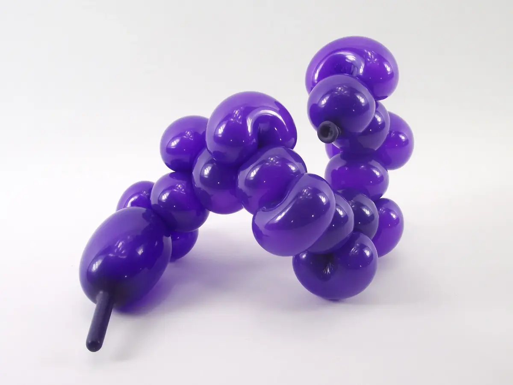14- Continuer et répéter cette manipulation autant de fois que possible !15- Vous savez maintenant faire une bulle-oreille ! À bientôt ! Pour une nouvelle leçon... avec Môssieur Ballon !